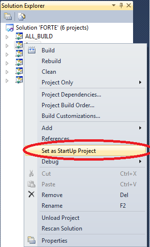

Compiling and Debugging FORTE with MS Visual Studio Express
FORTE with a win32-architecture can only be created with Visual Studio. The following describes how to compile FORTE with win32-architecture.
Create MS Visual Studio Project for FORTE with CMake
- Open cmake-gui
- choose source folder <forteroot>
- choose desired destination folder. We recommend <forteroot>/bin/win32
- press the Configure button and choose the version of visual studio that is used and native default compilers. Press the Finish button afterwards.
- Check FORTE_ARCHITECTURE_WIN32
- press the Configure and afterwards the Generate button
Compile Forte with Visual Studio Express
Open the generated FORTE project with Visual Studio and change from Debug to Release mode. Build FORTE afterwards. A forte.exe file should be generated in <forteroot>/bin/win32/src/Release.

Debug Forte with Visual Studio Express
Open the generated FORTE project with Visual Studio and change from Release to Debug mode. Set FORTE as the main project.

And Push F5 or click start debugging